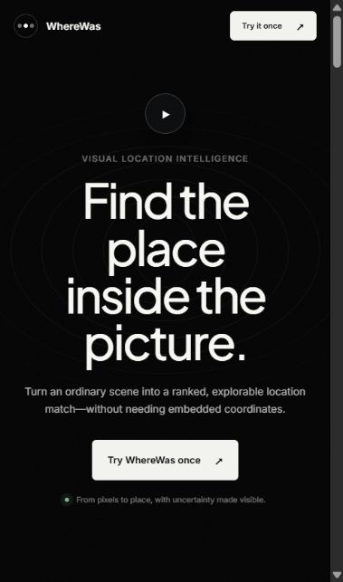

HTML
Giving a webpage its structure, meaningful sections, and a place for every idea.
Hi, I’m Girish Kumar. I’m learning to turn ideas into things you can click, explore, and use—with HTML, CSS, and Python.
Bring my code lab to life ↗Three tiny experiments. One workspace built by you.
Power up my workspace, one idea at a time.
Your first experiment starts here.
Giving a webpage its structure, meaningful sections, and a place for every idea.
Exploring layouts, colors, and the details that make a page feel like mine.
Practicing programming fundamentals and breaking problems into smaller steps.

A photo location-search project exploring how visual clues in an image can help identify where it was taken. The London demo illustrates a journey from selecting background clues to exploring a map and comparing reference imagery.
Current stage: Prototype with an illustrative demo. The staged demo is a concept walkthrough, not a measured location-search result.
Visual clues · Maps · Reference imagery
Open WhereWas ↗A personal portfolio with responsive design and three interactive coding experiments, built with HTML, CSS, and JavaScript.
I’m Girish, a first-year Computer Science and Engineering student at BMSCE. My current toolkit is HTML, CSS, and Python. This site is a place to share my learning and give visitors something to explore along the way.